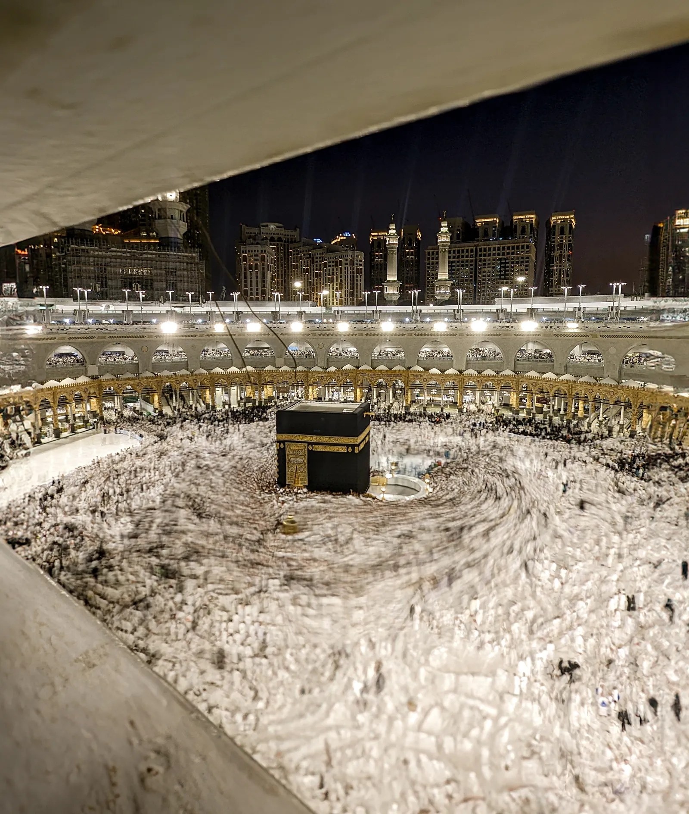

Umrah · Tawaf Guide
Tawaf Step by Step: How to Circle the Kaaba

Tawaf is walking seven complete circuits around the Kaaba, counter-clockwise, keeping the Kaaba on your left. Every circuit starts and ends at the Black Stone (Hajar al-Aswad). Tawaf is a pillar of Umrah — the Umrah is not complete without it — and it is also performed in Hajj and as a voluntary act of worship.
Before you start:
- Be in a state of wudu
- Make your intention (niyyah) for the Tawaf
- Men performing a Tawaf that will be followed by Sa'i uncover the right shoulder (Idtiba) — this is the Sunnah for this Tawaf only
Step by step:
- Step 1 — Start at the Black Stone. Stand level with the Black Stone — the line is marked by the green light on the wall. If you can reach it without pushing anyone, touch it or kiss it; otherwise raise your right hand towards it (Istilam) and say "Bismillah, Allahu Akbar". Never push or shove — harming another worshipper is never part of the Sunnah.
- Step 2 — Walk counter-clockwise. Men walk briskly with short steps (Ramal) in the first three circuits only, then walk normally for the last four. Women walk normally throughout.
- Step 3 — Make dua as you walk. There is no fixed dua for each circuit — make personal dua and dhikr in any language. Between the Yemeni Corner (Rukn Yamani) and the Black Stone, recite: "Rabbana atina fid-dunya hasanatan wa fil-akhirati hasanatan wa qina adhaba n-nar" — "Our Lord, give us good in this world and good in the Hereafter, and shield us from the punishment of the Fire" (Qur'an 2:201). Touch the Yemeni Corner with your right hand if you can reach it — without kissing it and without saying takbir.
- Step 4 — Count carefully. Tawaf is exactly seven circuits. If you lose count, take the lower number and continue from there. A tasbih, your fingers or a phone counter all help.
- Step 5 — After the seventh circuit. Cover the right shoulder again, then pray two rak'ahs of Tawaf at Maqam Ibrahim if you can — anywhere in the mosque is valid if it is crowded. The Sunnah is to recite Surah al-Kafirun in the first rak'ah and Surah al-Ikhlas in the second. Make dua at the Multazam if you can reach it calmly, then drink Zamzam water. If this Tawaf is followed by Sa'i, go on to Safa.
The main types of Tawaf: Tawaf al-Umrah — the Tawaf performed as part of Umrah; Tawaf al-Qudum — the arrival Tawaf when you reach Makkah for Hajj; and Tawaf al-Wada — the farewell Tawaf performed before leaving Makkah.
From the Sunnah: the longest description of the Prophet's ﷺ Hajj — including his Tawaf, the Ramal in the first three circuits and the two rak'ahs at Maqam Ibrahim — was narrated by Jabir ibn Abdullah (RA) and is recorded in Sahih Muslim 1218.
Sources: Tawaf Guide — Halal Muslim Travel ↗ · How to Perform Tawaf — Guide to Hajj ↗ · How to Perform Tawaf — The Umrah Bundle ↗ · Tawaf al-Qudum — Mahajja ↗